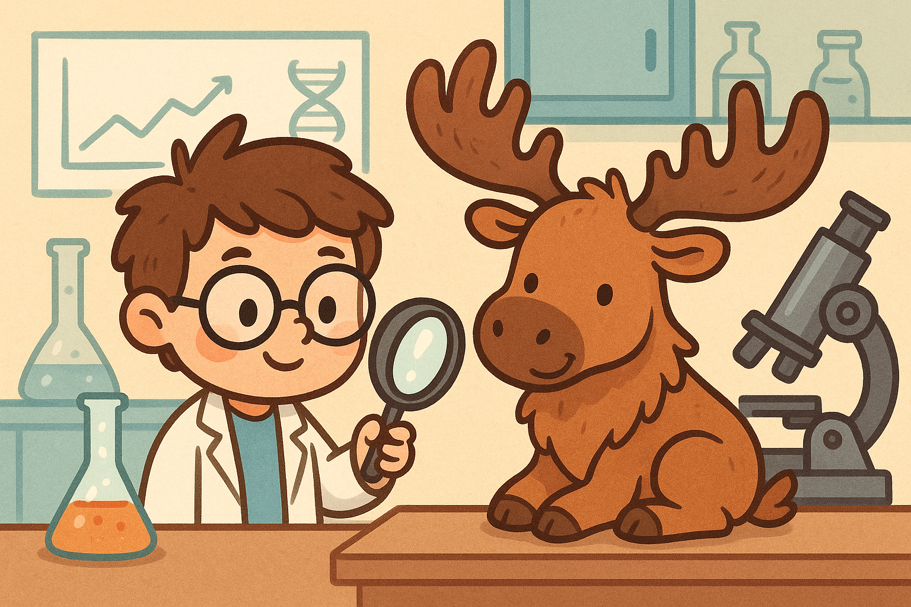

Wildlife Analyzer
An MLOps Dashboard for Wildlife Observations

Introduction
This project leverages the iNaturalist API, which is an open source community for sharing high-quality wildlife sightings.
The Wildlife Analyzer consists of a modular MLOps-style pipeline with the following stages:
- Fetch: Fetches relevant observation data from the API based on the parameters specified in the settings
- Pre-Processing: Uses Pandas and Python to parse the data into a clean dataframe format, saving it as a CSV
- Modeling: Depending on parameter settings, can run various ML and GenAI analyses on the data, including:
- KMeans Clustering using Sci-Kit Learn (in which case there will be a feature engineering pipeline stage prior to clustering)
- LLM Summary using gpt-4o through OpenAI API
- LLM Analysis gpt-4o analysis of the data, giving more directed insights and leveraging structured outputs
- LLM QA through a simple chat UI, allowing users to have multi-round conversations about the data
- Visualization: Depending on which modeling stages were run, the UI can display various visualizations of the results and metrics
- Logging/Monitoring: Following common MLOps practices, various metrics and outputs are logged and saved in a cloud storage system (default a "mock cloud" in a local directory, but AWS S3 logging can be enabled if this repo is run locally)
- TODO: While not currently implemented yet, I intend to add periodic monitoring logic to the project, along with automatic parameter updating and pipeline re-deployment based on metrics and performance to follow CI/CD principles, continuously testing/monitoring and delivering
- The current state of the project is meant as a proof of concept, with all of the needed features (logging and cloud storage) to eventually incorporate CI/CD through periodic data fetching, continuous metric monitoring, and managing deployment through tools like GitHub Actions
- I have also set up and experimented with using MLflow for higher quality and efficient logging, however the code is currently commented out because it is meant to be a local tool. Instructions for setup are below.
Resources
- Streamlit for the dashboard interface.
- iNaturalist API for fetching wildlife observations.
- OpenAI API for generating summaries.
- Plotly for interactive visualizations.
- Pandas for data manipulation.
- KMeans from scikit-learn for clustering observations.
- MLflow for tracking runs and logging model metrics.
- AWS for cloud storage and services.
- Databricks: MLOps